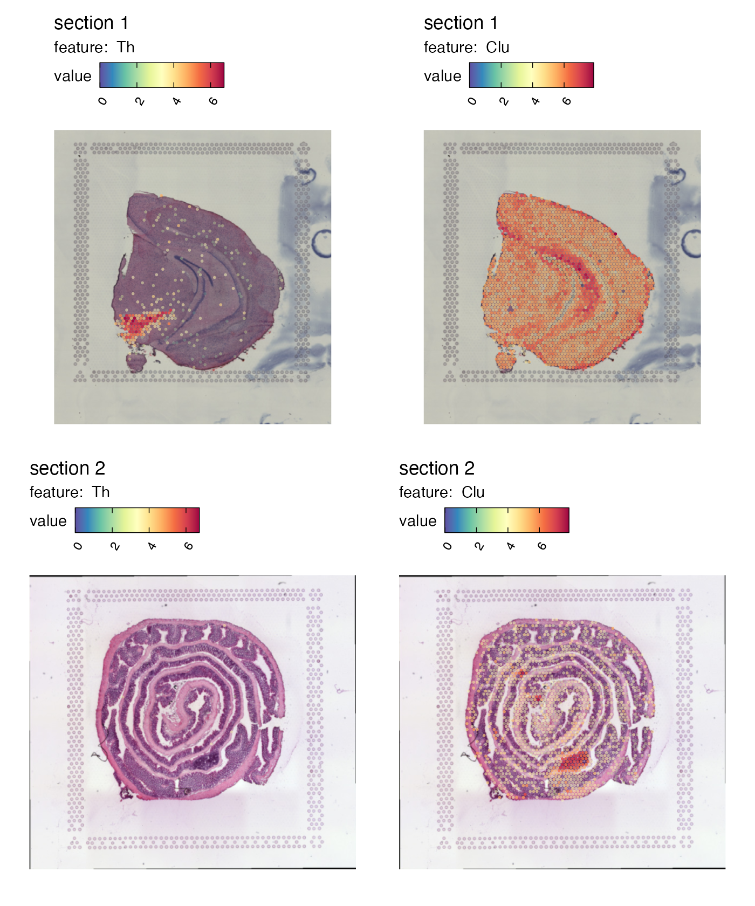

Visualization of numeric features
Last compiled: 08 September 2025
numeric_features.RmdIn the visualization tutorials, we’ll have a look at different ways
of creating spatial plots with semla.
Functions such as MapFeatures() and
MapLabels() produce patchworks (see R package patchwork) which are
easy to manipulate after they have been created. The
patchwork R package is extremely versatile and makes it
easy to customize your figures!
For those who are familiar with Seurat, these functions
are similar to SpatialFeaturePlot() and
SpatialDimPlot() in the sense that the first can be used to
visualize numeric data and the latter can be used to color data points
based on categorical data.
If you are interested in more advanced features - including details about how to use the patchwork system and other visualization methods - you can skip directly to the ‘Advanced visualization’ tutorial.
Here we’ll have a look at basic usage of the
MapFeatures() function.
Load data
First we need to load some 10x Visium data. Here we’ll use a mouse
brain tissue dataset and a mouse colon dataset that are shipped with
semla.
# Load data
se_mbrain <- readRDS(file = system.file("extdata",
"mousebrain/se_mbrain",
package = "semla"))
se_mbrain$sample_id <- "mousebrain"
se_mcolon <- readRDS(file = system.file("extdata",
"mousecolon/se_mcolon",
package = "semla"))
se_mcolon$sample_id <- "mousecolon"
se <- MergeSTData(se_mbrain, se_mcolon)Map numeric features
Let’s get started with MapFeatures(). The most basic
usage is to map gene expression spatially:
cols <- viridis::rocket(11, direction = -1)
p <- MapFeatures(se,
features = c("Th", "Clu"),
colors = cols)
p
We can also plot other numeric features present within the
meta.data slot, such as the quality metrics
‘nCount_Spatial’ and ‘nFeature_Spatial’. To view the distribution of the
selected feature per sample, the function MapFeaturesSummary() can be
used to add a subplot next to the spatial plot (choose from histogram,
box, violin, or density plot).
p <- MapFeaturesSummary(se,
features = "nFeature_Spatial",
subplot_type = "violin",
colors = cols)
pIf the distribution of your gene or feature is very skewed, it can
also ease the visualization to modify the max_cutoff and/or
min_cutoff arguments, where you provide a number between
0-1, corresponding the k-th percentile of the feature’s data range. By
doing this, it can help you create more distinct visualizations, where
spots with the more extreme values - see example below, where the plot
to the right has been capped by minimum and maximum percentiles:
p1 <- MapFeatures(se,
section_number = 1, # Show only the first sample
features = "Ptgds",
max_cutoff = 1, # Full data
colors = cols)
p2 <- MapFeatures(se,
section_number = 1, # Show only the first sample
features = "Ptgds",
max_cutoff = 0.95, # Max value set to the 95th percentile
min_cutoff = 0.05, # Min value set to the 5th percentile
colors = cols)
p1 | p2Map dimensionality reduction vectors
MapFeatures handles any type of numeric features which
can be fetched using the Seurat function
FetchData(). This includes latent vectors from
dimensionality reduction methods.
se <- se |>
ScaleData() |>
FindVariableFeatures() |>
RunPCA()## Warning: The `slot` argument of `GetAssayData()` is deprecated as of SeuratObject 5.0.0.
## ℹ Please use the `layer` argument instead.
## ℹ The deprecated feature was likely used in the Seurat package.
## Please report the issue at <https://github.com/satijalab/seurat/issues>.
## This warning is displayed once every 8 hours.
## Call `lifecycle::last_lifecycle_warnings()` to see where this warning was
## generated.## Warning: The `slot` argument of `SetAssayData()` is deprecated as of SeuratObject 5.0.0.
## ℹ Please use the `layer` argument instead.
## ℹ The deprecated feature was likely used in the Seurat package.
## Please report the issue at <https://github.com/satijalab/seurat/issues>.
## This warning is displayed once every 8 hours.
## Call `lifecycle::last_lifecycle_warnings()` to see where this warning was
## generated.## Centering and scaling data matrix## PC_ 1
## Positive: Ptgds, Snap25, Rtn1, Cck, Nrgn, Eef1a2, Snca, Olfm1, Uchl1, Mobp
## Mbp, Plp1, Stmn2, Fabp5, Hpca, Pvalb, Nnat, Nptxr, Cpne6, Npy
## Clu, Mag, Pcp4, Apod, Scg2, Crym, Hbb-bs, Mal, Arc, Mog
## Negative: Car1, Cyp2c55, Cnn1, Aqp8, Dsp, Emp1, 1810065E05Rik, Tgm3, Acta2, Cd24a
## Hmgcs2, Tagln, Fabp2, Col1a2, Myh11, H2-Aa, Actg2, S100g, Car4, Pyy
## Ces2e, Apol10a, Mgat4c, Prdx6, Slc37a2, Prkcd, Ang4, Cd74, Atp12a, Myl9
## PC_ 2
## Positive: Slc6a3, Th, Mog, Chrna6, Apod, Mag, Drd2, Opalin, En1, Mal
## Lhx1os, Aldh1a1, Slc18a2, Slc10a4, Mobp, Cnp, Dlk1, Plp1, Ret, Sncg
## Spp1, Mbp, Ddc, Ptgds, Tcf7l2, Calb2, Pitx2, Tnnt1, Pvalb, Slc13a4
## Negative: Nov, Lamp5, Egr1, Nr4a1, Crym, Neurod6, Arc, Nptxr, Myh7, Coro1a
## Sst, Cort, Npy, Tmsb4x, Spink8, Cpne6, Grp, Mfge8, Nrgn, Rprm
## Fibcd1, Myl4, Hpca, Chgb, Vip, Snca, Cck, Tac2, Olfm1, Trh
## PC_ 3
## Positive: Slc18a2, En1, Th, Slc10a4, Slc6a3, Chrna6, Dlk1, Sncg, Drd2, Ret
## Ddc, Calb2, Cpne7, Hpcal1, Dcn, Scg2, Nnat, Vip, Coro1a, Prph
## Stmn2, Nos1, Mfge8, Myh7, Ecel1, Tmsb4x, Htr3a, Trh, Snca, Tac1
## Negative: Myoc, Hbb-bt, Hba-a1, Mog, Opalin, Gfap, Slc13a4, Mag, Mal, Mobp
## Apod, Pvalb, Ptgds, C1ql2, Tnnt1, Reg3b, Plp1, Lhx1os, Tcf7l2, Hba-a2
## Mbp, Iapp, Fabp2, Hbb-bs, Fmod, Defb37, Myl4, Car1, Cyp2c55, Spp1
## PC_ 4
## Positive: H2-DMb2, Ly6d, Ighd, Il22ra2, Cd52, Cd79b, Cd79a, Ighm, Clu, C3
## Spib, Mfge8, Lyz2, Ccl20, Ubd, Cnp, Iglc2, Hba-a2, Ly6g, Ighg2b
## Myoc, H2-Eb1, Hbb-bs, Hbb-bt, Hba-a1, Apod, Slc13a4, Cd74, Vtn, Fabp5
## Negative: En1, Cyp4b1, Ces1g, Chrna6, Slc10a2, Defb37, Th, Sct, Slc18a2, Slc10a4
## Slc6a3, Slc51a, Nov, Iapp, Drd2, Tmigd1, Fabp2, Dlk1, Reg3b, Myh7
## Cpne7, 1810065E05Rik, Cyp2d26, Apol10a, Cyp2c55, Emp1, Spink8, Nts, Mgat4c, S100g
## PC_ 5
## Positive: Trbc2, Myl4, Arc, Egr1, Nr4a1, Ighm, Coro1a, Lamp5, Ly6d, Cplx3
## Ighd, Th, En1, H2-DMb2, Neurod6, Opalin, Cd79b, Chrna6, Cd79a, Il22ra2
## Mobp, Mog, Spib, Drd2, Pvalb, Cnp, Mal, Mag, Cd52, Slc6a3
## Negative: Myoc, Slc13a4, Fmod, Dcn, Gfap, Hba-a2, Hbb-bt, Hba-a1, Vtn, Trh
## Ecel1, Hbb-bs, Slc6a20a, Nnat, Mgp, Nos1, Spp1, Fibcd1, Htr3a, Vgll3
## Cpne7, Calb2, Hpcal1, C1ql2, Spink8, Crym, Myl9, Lypd1, Rcn1, CartptWhen plotting numeric features that are centered at 0, it is more appropriate to also center the color scale and select a ‘divergent’ color palette.
MapFeatures(se,
features = "PC_2",
center_zero = TRUE,
section_number = 1,
pt_size = 2,
colors = RColorBrewer::brewer.pal(n = 11, name = "RdBu") |> rev())Overlay maps on images
If we want to create a map with the H&E images we can do this by
setting image_use = raw. But before we can do this, we need
to load the images into our Seurat object:
se <- LoadImages(se, verbose = FALSE)
cols <- RColorBrewer::brewer.pal(11, "Spectral") |> rev()
p <- MapFeatures(se,
features = c("Th", "Clu"),
image_use = "raw",
colors = cols)
pRight now it’s quite difficult to see the tissue underneath the spots. We can add some opacity to the colors which is scaled by the feature values to make spots with low expression transparent:
p <- MapFeatures(se,
features = c("Th", "Clu"),
image_use = "raw",
colors = cols,
scale_alpha = TRUE)
p
Crop image
We can crop the images manually by defining a crop_area.
The crop_area should be a vector of length four defining
the opposite corners of a rectangle, where the x- and y-axes are defined
from 0-1.
In order to more easily see how this rectangle could be defined we can get some help by adding a grid to the plot.
p <- MapFeatures(se,
section_number = 2,
features = "Clu",
image_use = "raw",
color = cols,
pt_alpha = 0.5) &
labs(x="x-axis", y="y-axis") &
theme(panel.grid.major = element_line(linetype = "dashed"),
axis.text = element_text(),
axis.title = element_text())
pThe Clu gene expression reveals where we have an area of lymphoid tissue in the colon sample. Now if we want to crop out the GALT tissue in the mouse colon sample we can cut the image at:
x-left = 0.45
y-left = 0.55
x-right = 0.65
y-right = 0.7
Provide these coordinates to the crop_area argument in
that order (x-left, y-left, x-right, y-right).
p <- MapFeatures(se, features = c("Cd79a", "Clu"), image_use = "raw",
pt_size = 3, section_number = 2,
color = cols, crop_area = c(0.45, 0.55, 0.65, 0.7))
pAnd we can patch together a nice figure showing the expression both at a global level and inside the GALT:
p_global <- MapFeatures(se,
features = c("Cd79a", "Clu"),
image_use = "raw",
scale_alpha = TRUE,
pt_size = 1,
section_number = 2,
color = cols,
override_plot_dims = TRUE)
p_GALT <- MapFeatures(se,
features = c("Cd79a", "Clu"),
image_use = "raw",
scale_alpha = TRUE,
pt_size = 3,
section_number = 2,
color = cols,
crop_area = c(0.45, 0.55, 0.65, 0.7)) &
theme(plot.title = element_blank(),
plot.subtitle = element_blank(),
legend.position = "none")
(p_global / p_GALT)Package version
-
semla: 1.4.0